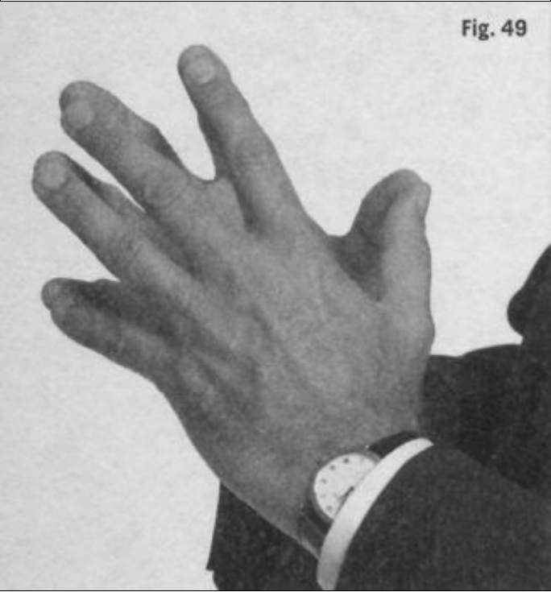
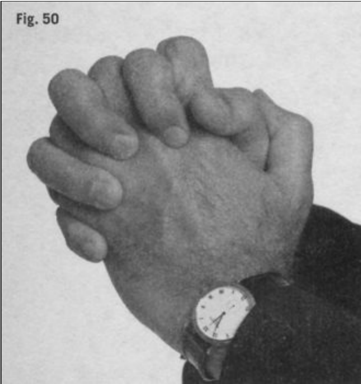
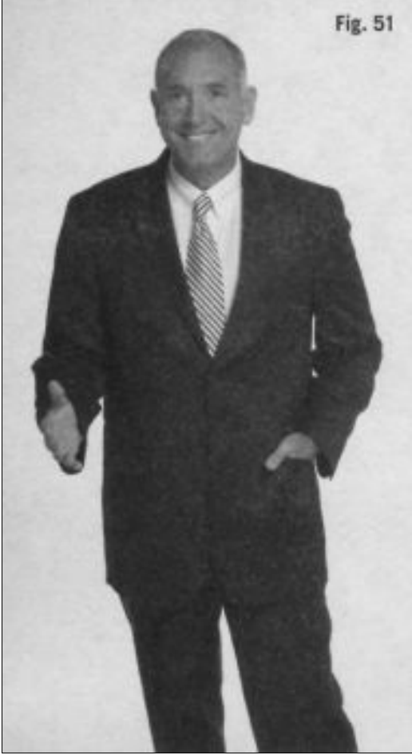
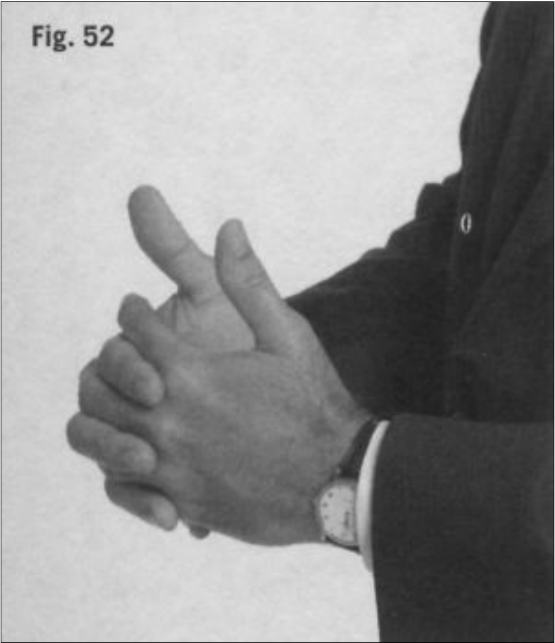
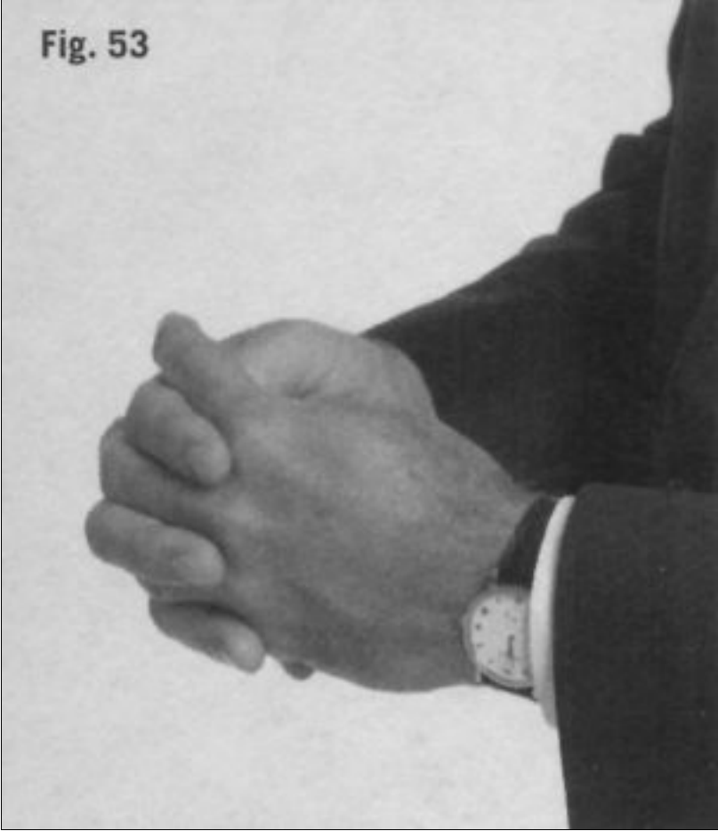
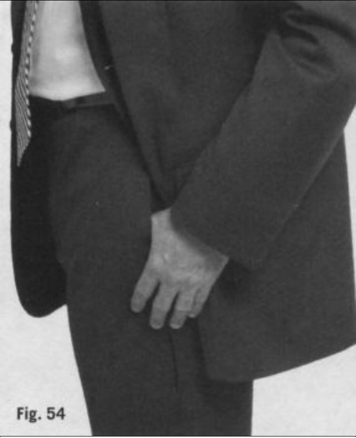
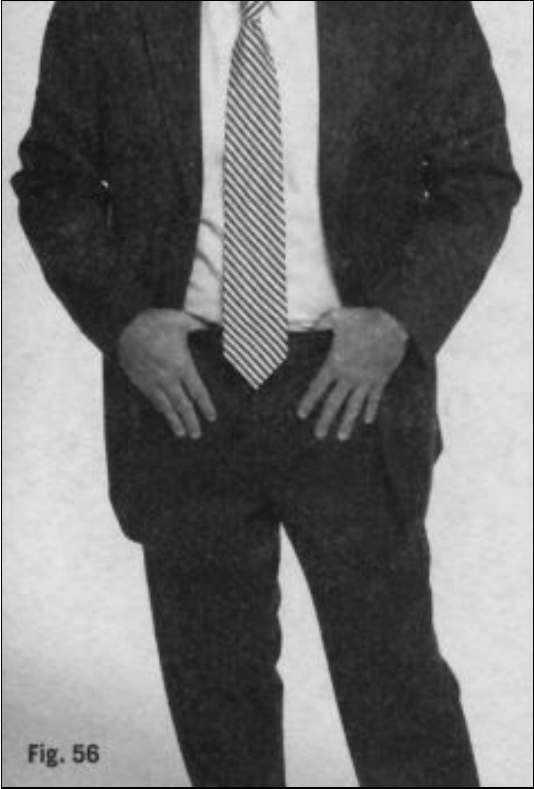
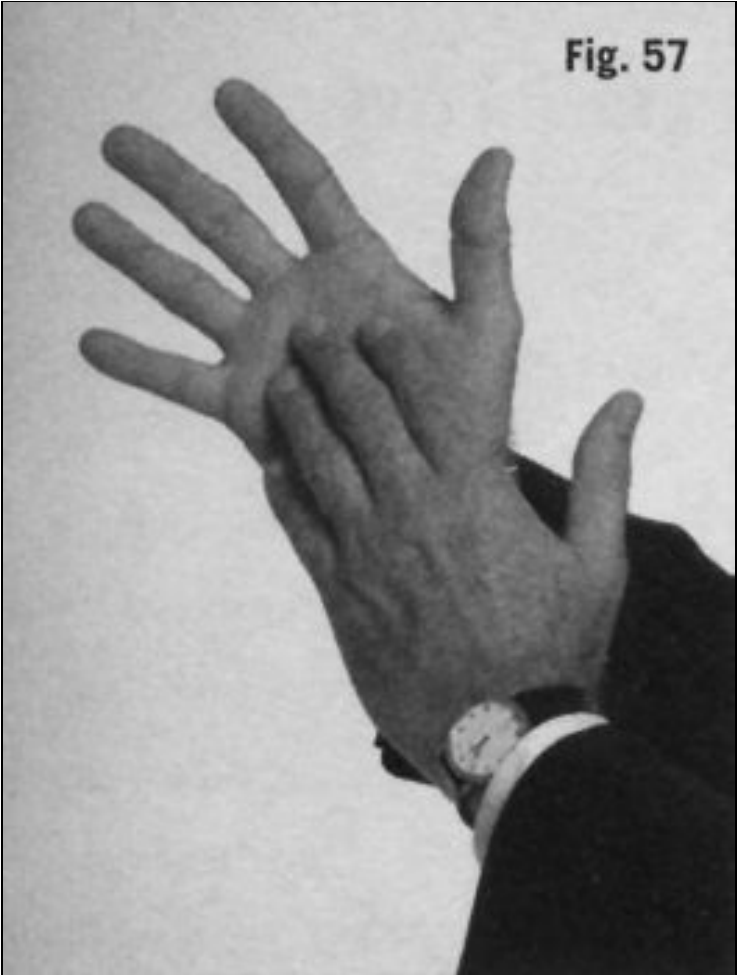
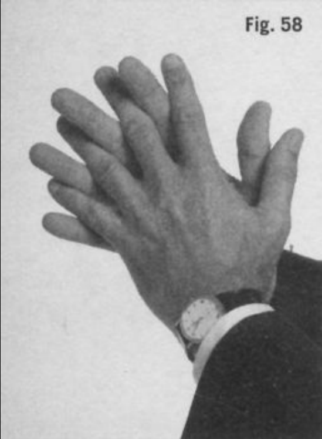

ECAPÍTULO 6CÓMO LLEGARA CONTROLARLOGestos de las manos y de los dedosntre todas las especies, nuestras manos son únicas, no sólo por lo quepueden lograr, sino también por cómo se comunican. Las manos humanaspueden pintar la Capilla Sixtina, puntear una guitarra, manejarinstrumentos quirúrgicos, esculpir un David, forjar acero y escribir poesía.Pueden agarrar, arañar, golpear, dar puñetazos, sentir, tocar, evaluar, agarrary moldear el mundo que nos rodea. Nuestras manos son extremadamenteexpresivas; pueden hablar con signos a los sordos, ayudar a contar unahistoria o revelar nuestros pensamientos más íntimos. Ninguna otra especietiene unos apéndices con un abanico tan extraordinario de habilidades.
Como nuestras manos son capaces de ejecutar movimientos muydelicados, pueden reflejar los matices más sutiles del cerebro. Lacomprensión de su comportamiento es crucial para descifrar loscomportamientos no verbales, ya que no hay prácticamente nada que tusmanos hagan que no haya sido dirigido, consciente o subconscientemente,por el cerebro. A pesar de la adquisición del lenguaje hablado a lo largo demillones de años de evolución humana, nuestros cerebros aún están programados para hacer que nuestras manos comuniquen con precisiónnuestras emociones, pensamientos y sentimientos. Por consiguiente, susgestos merecen nuestra atención como una rica fuente del comportamiento noverbal que nos ayudará a comprender los pensamientos y sentimientos de losdemás.
No sólo las manos de los demás nos comunican información importante,sino que los movimientos de nuestras propias manos también influyen encómo nos perciben los demás. Por lo tanto, la manera en que las usemos,además de lo que aprendamos de los comportamientos del resto de la gente,contribuirá a nuestra efectividad interpersonal en conjunto. Empecemosexaminando cómo las acciones de nuestras manos afectan a lo que los demáspiensan de nosotros.
El cerebro humano está programado para percibir el más mínimomovimiento de las manos y de los dedos. De hecho, dedica una cantidaddesproporcionada de atención a las muñecas, las palmas, los dedos y lasmanos, en comparación con el resto del cuerpo (Givens, 2005, 31, 76; Ratey,2001, 162-165). Desde el punto de vista evolutivo, esto tiene sentido. Cuandonuestra especie adoptó la postura erguida y nuestro cerebro se desarrolló aúnmás, nuestras manos se volvieron más hábiles, más expresivas y también máspeligrosas. Por motivos de supervivencia, tenemos la necesidad de evaluarrápidamente las manos de los demás para ver lo que dicen o si traen un malpresagio (como por ejemplo si sujetan un arma). Debido a que nuestroscerebros tienen una tendencia natural a centrarse en las manos, los artistas de éxito, magos y grandes oradores han sacado el máximo provecho a estefenómeno para hacer sus presentaciones más emocionantes y para distraernos(ver recuadro 35)
La gente responde positivamente a los movimientos eficaces de las manos.Si deseas aumentar tu efectividad como orador persuasivo, ya sea en casa, enel trabajo o incluso con los amigos, intenta ser más expresivo en el uso de losmovimientos de las manos. Para algunos individuos, la comunicaciónefectiva con las manos es algo natural, un don en el que no tienen que pensarni necesitan recibir formación al respecto. Para otros, sin embargo, requiereun esfuerzo concentrado y aprendizaje. Hables o no con las manos de unmodo natural, tienes que reconocer que comunicamos con más eficacianuestras ideas cuando las empleamos.
La gente te mirará recelosa si no puede verte las manos mientras hablas.Por lo tanto, asegúrate siempre de mantenerlas visibles durante lacomunicación cara a cara con los demás. Si alguna vez te habla alguien quemantiene las manos debajo de la mesa, enseguida te darás cuenta de loincómoda que resulta la conversación (ver recuadro 36). Cuando nosrelacionamos en persona con otros individuos, esperamos ver sus manos,porque el cerebro depende de ellas como una parte integral del proceso decomunicación. Cuando no están a la vista y son poco expresivas, restan valora la calidad y honestidad con las que se percibe la información que setransmite.
Un apretón de manos es, por lo general, el primer y, posiblemente, el únicocontacto físico que tenemos con otra persona. El modo en que lo hagamos,incluyendo la fuerza y duración, influye en cómo somos percibidos por aquela quien estamos saludando. Todos podemos recordar a alguien que, al darnosla mano, hizo que nos sintiéramos incómodos con él o con la situación. Nodescartes el poder de un apretón de manos a la hora de dejar una buena omala impresión. Es muy significativo.
En todo el mundo, es común usar las manos para saludar a los demás,aunque las diferentes culturas dictan variaciones sobre cómo realizar estossaludos en lo que se refiere a la duración y la fuerza. Cuando me trasladé a Utah para asistir a la Universidad Brigham Young, me enseñaron lo que miscompañeros universitarios llamaban el «apretón de manos mormón». Es unapretón de manos muy fuerte y largo que usan muchas personas, no sólo losestudiantes universitarios, sino también los miembros de la Iglesia deJesucristo de los santos de los últimos días (mormones). Durante los años quepasé allí, me fijé en cómo los alumnos extranjeros, en particular, a menudo sequedaban perplejos con este apretón de manos excesivamente entusiasta. Estose debe a que, en muchas culturas, especialmente en Latinoamérica, elapretón de manos es suave (y algunos prefieren dar un abrazo, como ya hecomentado anteriormente).
Dado que el apretón de manos, por lo general, es el instante en que dospersonas se tocan verdaderamente por primera vez, puede ser un momentodecisivo en una relación. Además de su utilización para presentarse ysaludarse, ciertos individuos lo usan para establecer su dominio. En los añosochenta se escribió mucho sobre cómo se podía usar el apretón de manos paraestablecer el control y el dominio moviendo la mano de un modo u otro yasegurándose de que la de uno estuviera siempre encima. ¡Qué pérdida detiempo!
No recomiendo iniciar una lucha con las manos para lograr el dominio, yaque, cuando conocemos a otras personas, nuestra intención debería ser dejaruna impresión positiva, no negativa. Si sientes la necesidad de establecer eldominio, las manos no son el modo correcto de hacerlo. Hay otras tácticasmás poderosas, como la invasión del espacio y la mirada, que además sonmás sutiles.
He estrechado la mano a gente que intenta establecer el dominio a travésde este saludo y siempre me he llevado impresiones negativas. No logranhacerme sentir inferior, sólo incómodo. También están aquellos que insistenen tocar la parte interna (ventral) de la muñeca con el dedo índice cuando estrechan la mano. Si te hacen esto y te sientes incómodo, que no tesorprenda, porque la mayoría de la gente reacciona así.
Asimismo, posiblemente te sentirás incómodo si alguien te da lo que sedenomina un «apretón de manos de político», en el que la otra persona cubrela parte superior del apretón de manos con la mano izquierda. Supongo quelos políticos creen que se están mostrando más amables con este gesto de lasdos manos, sin darse cuenta de que a muchas personas no les gusta que lastoquen así. Conozco a gente (en su mayoría hombres) que insisten enestrechar la mano de este modo y acaban despertando sentimientos negativosen la gente que conocen. Obviamente, deberías evitar estrechar la mano decualquiera de estas molestas formas, a menos que quieras hacer que alguiense distancie.
Por muy extraño que pueda parecer a los occidentales, en muchas culturaslos hombres se toman de la mano. Esto es muy común en el mundomusulmán y en Asia, especialmente en Vietnam y Laos. Sin embargo, enEstados Unidos, los hombres a menudo se sienten incómodos cogiéndose dela mano porque esto no es común en la cultura occidental una vez pasada lainfancia o fuera de ciertos rituales religiosos. Cuando imparto clases en laacademia del FBI, pido a los jóvenes agentes que se levanten y se estrechenla mano los unos a los otros. No tienen ningún problema en hacer esto, nisiquiera cuando se les insta a que lleven a cabo un prolongado apretón demanos. Sin embargo, cuando les pido que se tomen de la mano colocándoseuno al lado del otro, hombro con hombro, enseguida se oyen comentariosdespectivos y objeciones; se avergüenzan sólo con pensarlo y únicamente lohacen después de muchos titubeos. Entonces, recuerdo a los nuevos agentesque tratamos con personas de muchas culturas y que estos individuos amenudo muestran su nivel de comodidad con nosotros tomándonos de lamano. Es algo que los occidentales necesitamos aprender a aceptar, especialmente cuando tratamos con agentes (informadores) de otros países(ver recuadro 37).
Muchas culturas usan el contacto para consolidar sentimientos positivosentre varones, algo que no está muy extendido en otros países, como EstadosUnidos. La historia del caballero búlgaro de la página siguiente no sólo reveladiferencias culturales, sino que pone de manifiesto la importancia delcontacto físico para nuestra especie. En las relaciones interpersonales, ya seaentre hombres, mujeres, padres e hijos, o amantes, es esencial tener contactofísico y evaluarlo para determinar en qué punto está la relación. Uno de lossignos de que una relación se ha deteriorado o está en peligro es unarepentina disminución del contacto (suponiendo que exista). En cualquierrelación, cuando existe confianza, hay más actividad táctil.
Si viajas al extranjero o planeas hacerlo en el futuro, asegúrate de quecomprendes las convenciones sociales del país que vas a visitar,especialmente en todo lo referente a saludos. Si alguien te da un apretón demanos flojo, no hagas una mueca. Si alguien te toma del brazo, no hagas ungesto de dolor. Si te encuentras en Oriente Medio y una persona quieretomarte de la mano, déjale que lo haga. Si eres un hombre y visitas Rusia, note sorprendas cuando tu anfitrión varón te bese la mejilla, en lugar de darte lamano. Todos estos saludos son una forma tan natural de expresarsentimientos sinceros como nuestro apretón de manos. Yo me siento honradocuando un hombre árabe o asiático se ofrece a tomarme de la mano porque séque es un gesto de gran respeto y confianza. El hecho de aceptar estasdiferencias culturales es el primer paso para comprender y aceptar ladiversidad.
En muchos países del mundo, señalar con el dedo se considera uno de losgestos más ofensivos que una persona pueda hacer. Ciertos estudiosdemuestran que a la gente no le gusta que alguien los señale con el dedo. En los patios de los colegios y también de las prisiones, el hechode señalar con el dedo es, a menudo, el precursor de muchas peleas. Lospadres, al hablar con sus hijos, deberían tener cuidado y evitar señalarlos conel dedo mientras dicen cosas como: «Sé que lo has hecho tú», porque este gesto es tan desagradable que puede desviar la atención del niño acerca de loque se está diciendo mientras procesa el mensaje hostil del gesto (verrecuadro 38).
Señalar con el dedo es sólo uno de los muchos gestos ofensivos que unapersona puede hacer con la mano o con los dedos. Obviamente, algunos sontan conocidos que no necesitan más comentarios, como el gesto de levantar eldedo corazón hacia alguien. Chasquear los dedos también se consideragrosero; nunca deberías intentar captar la atención de alguien con el mismogesto que usarías para llamar a tu perro. En el juicio contra Michael Jacksonen 2005, a los miembros del jurado no les gustó que la madre de una de lasvíctimas les chasqueara los dedos; esto tuvo un efecto muy negativo.
Para aquellos de vosotros interesados en leer más sobre el significado delos gestos de las manos en el mundo, os recomiendo encarecidamenteBodytalk: The meaning of human gestures, de Desmond Morris, y Gestures:The do’s and taboos of body language around the world (traducido al españolcon el título de Gestos), de Roger E. Axtell. Estos dos maravillosos libros osabrirán los ojos a la diversidad de gestos de todo el mundo y a la elocuenciade las manos para expresar emociones.
Usamos los dedos para arreglarnos la ropa, el pelo y el cuerpo cuandoestamos preocupados por nuestro aspecto. Durante el cortejo, los humanos searreglan más de lo normal, no sólo en referencia a nuestro propio aspecto,sino también al de nuestra pareja. La intimidad permite que la mujer quitecon delicadeza una pelusa de la manga de su compañero mientras él le limpiacon ternura un poco de comida en la comisura de la boca. Estoscomportamientos se producen asimismo entre madre e hijo, no sólo enhumanos, sino también en otros mamíferos y en aves, y son un indicativo decariño y de mucha intimidad. La frecuencia con que se realizan este tipo degestos en una pareja es un buen barómetro de su relación y del nivel deintimidad permitido.
Sin embargo, el hecho de arreglarse también puede crear percepcionesnegativas. Por ejemplo, es grosero e irrespetuoso que una persona se arregle,embelesada consigo misma y desdeñosa, cuando se supone que debería estarescuchando a otra persona. Además, hay algunos actos queestán más socialmente aceptados en público que otros. Está bien quitarse una pelusa del jersey en el autobús, pero recortarse las uñas es un tema totalmentediferente. Además, lo que está aceptado socialmente en una situación ocultura puede no estarlo en otra. Tampoco es apropiado que una personaarregle a otra cuando no han alcanzado un nivel de intimidad que justifiqueese comportamiento.
Si se observa las manos de la gente, es posible valorar el tipo de trabajoque hacen o las actividades que desempeñan. Las manos de las personas querealizan labores manuales en la construcción o que trabajan como mecánicostendrán cierto aspecto áspero y encallecido. Las cicatrices pueden indicarnosque la persona trabaja en una granja o que ha sufrido lesiones deportivas en elcampo de juego. El hecho de que alguien mantenga las manos en los costadoscon los dedos doblados puede indicarnos que tiene experiencia militar. Y unguitarrista probablemente tenga callos en las puntas de los dedos de unamano.
Las manos también nos dicen hasta qué punto nos ocupamos de nosotrosmismos y cómo vemos las convenciones sociales. Si las manos no se cuidan,se ensucian mucho. Las uñas deben arreglarse, porque, en caso contrario, sedeterioran. Las uñas largas en los hombres se consideran algo extraño yafeminado, y la gente normalmente identifica el gesto de morderse las uñascon un signo de nerviosismo o inseguridad. Dado que nuestroscerebros se centran tanto en las manos, deberías prestar mayor atención a suhigiene, ya que los demás sí lo harán.
A nadie le gusta estrechar una mano húmeda, así que yo aconsejo a lagente a la que le sudan las manos que, cuando tengan que estrechar la manode alguien (especialmente de gente importante, como jefes potenciales,futuros suegros o individuos cuya posición les permite conceder favores), sela sequen antes. Las manos no nos sudan únicamente cuando tenemosexcesivo calor, sino también cuando estamos nerviosos o bajo tensión.Cuando tocas a una persona que tiene las manos sudadas, puedes suponer queestá bajo tensión (ya que la excitación límbica provoca el sudor). Aprovechaesa oportunidad para ganar algunos puntos interpersonales, ayudándola,discretamente, a calmarse. Hacer que la gente se sienta a gusto cuando estáestresada es una de las mejores formas de lograr interacciones sinceras,efectivas y exitosas.
Hay gente que cree erróneamente que si una persona tiene las palmassudadas está mintiendo. Esto no es exacto. La misma parte del sistemanervioso que se activa durante la respuesta límbica de paralización, huida olucha (el sistema nervioso simpático) también controla las glándulassudoríparas y, dado que algo tan simple como conocer a alguien nuevo puedeprovocar que nos suden las manos, este fenómeno no debe interpretarse comoindicativo de engaño. Aproximadamente el 5% de la población sudaprofusamente, y la transpiración crónica deja las palmas incómodamentesudadas –un estado conocido como hiperhidrosis– (Collett, 2003, 11).Aunque algunas fuentes afirman que una persona miente si tiene las palmassudadas, éstas no son un indicativo de engaño, sólo de estrés o, en algunoscasos, de un trastorno genético. Ten cuidado, por tanto, cuando evalúes lasrazones que provocan las manos húmedas.
Hasta el momento, hemos examinado cómo los comportamientos y elaspecto de nuestras manos pueden influir en cómo nos perciben los demás.Ahora exploremos algunos gestos no verbales de las manos que nos ayudarána interpretar lo que otras personas piensan y sienten. Empezaré con unoscuantos comentarios generales sobre cómo nuestras manos desvelaninformación y luego entraré en algunos comportamientos específicos queindican mucha o poca seguridad y que pueden ser útiles a la hora decomprender a las personas.
Los músculos que controlan nuestras manos y nuestros dedos estándiseñados para realizar movimientos precisos y delicados. Cuando el cerebrolímbico está excitado, y nos sentimos estresados y nerviosos, los impulsos delos neurotransmisores y de hormonas como la adrenalina (epinefrina)provocan el temblor incontrolado de las manos. También tiemblan cuandooímos, vemos o pensamos algo que tiene consecuencias negativas. Además,al sujetar con las manos cualquier objeto, el temblor parece aumentar, comotelegrafiando un mensaje que dijera: «Estoy bajo tensión» (ver recuadro 39).Este comportamiento es especialmente perceptible cuando la persona estásujetando un objeto alargado, como un lápiz o un cigarrillo, o algorelativamente grande pero ligero, como un trozo de papel. El objeto empezará a agitarse o a temblar justo después de que se haya producido la afirmación oel acontecimiento desencadenante de las circunstancias estresantes.
Las emociones positivas también pueden hacer que nuestras manostiemblen, ya estemos sujetando un billete de la lotería premiado o ganandouna mano en el póquer. Cuando nos sentimos realmente excitados, nuestrasmanos tiemblan, a veces incontroladamente. Son reacciones impulsadas porel cerebro límbico. Cuando padres, cónyuges y otros miembros de la familiaesperan nerviosos en el aeropuerto el regreso de un familiar, con frecuenciales tiemblan las manos a causa de la excitación. Puede que las contenganagarrando la mano a otra persona, metiéndolas por debajo de las axilas oapretándolas a la altura del pecho. De hecho, los vídeos de la primera visitade los Beatles a Estados Unidos están repletos de adolescentes apretándoselas manos para combatir el temblor que acompañaba a su extrema excitación.
Obviamente, primero debes determinar si las manos temblorosas se debenal miedo o a la alegría, poniendo el comportamiento en contexto yexaminando las circunstancias en las que sucede. Si las manos temblorosasvan acompañadas de acciones apaciguadoras, como tocarse el cuello o cerrarlos labios con fuerza, será más probable que el temblor esté relacionado conel estrés (algo negativo) más que con algo positivo.
Debe tenerse en cuenta que las manos temblorosas sólo son relevantescomo forma de comunicación no verbal cuando representan un cambio respecto al movimiento de manos normal de una persona en concreto. Si aalguien le tiemblan las manos siempre porque, por ejemplo, bebe mucho caféo es adicto al alcohol o a las drogas, el temblor, aunque es informativo, seconvierte en parte de la línea base del comportamiento no verbal delindividuo. Del mismo modo, en las personas con ciertos trastornosneurológicos (como la enfermedad de Parkinson), el temblor de las manosseguramente no refleja su estado emocional. De hecho, si dicha persona dejade temblar durante un momento, esto puede mostrar un intento deliberado deconcentrarse más en el tema en particular que acaba de mencionarse (Murray,2007). Recuerda, lo más significativo es el cambio en el comportamiento.Como directriz general, cualquier comportamiento tembloroso que empiece ocese de repente, o que difiera considerablemente de la línea base decomportamiento, merece un mayor escrutinio. Considerar el contexto en elque se produce el temblor, cuándo ocurre y cualquier otro indicio que puedarespaldar una interpretación específica mejorará tu capacidad para interpretarcorrectamente a la gente.
Las muestras de gran confianza reflejan un alto grado de bienestar yseguridad en uno mismo. Varias demostraciones de confianza asociadas conlas manos nos avisan de que la persona se siente bien y cómoda en su actualsituación.
Unir las manos de este modo probablemente sea el indicio más potente deconfianza. Consiste en unir las puntas de los dedos abiertos deambas manos en un gesto similar al que se hace cuando se reza, pero, en estecaso, los dedos no se entrelazan y las palmas no deberían tocarse. En inglésrecibe el nombre de steepling porque las manos adoptan la forma puntiagudade la aguja (steeple) de una iglesia. En Estados Unidos, las mujeres suelenhacer este gesto a la altura de la cintura aproximadamente, lo cual a vecesdificulta que sea percibido. Los hombres, sin embargo, tienden a hacerlo másarriba, a la altura del pecho, lo que lo convierte en un gesto más visible ypotente.
Este gesto significa que estás seguro de tus pensamientos o de tu posición.Informa a los demás con precisión sobre cómo te sientes respecto a algo y loinsistente que te mostrarás a la hora de mantener tu punto de vista (verrecuadro 40). La gente con un estatus alto (abogados, jueces o médicos) amenudo usa este gesto como parte de su repertorio diario debido a laconfianza que tienen en sí mismos y a su estatus. Todos lo hemos realizadoalguna vez, pero lo hacemos en diferentes grados y usando una grandiversidad de estilos. Algunas personas lo hacen todo el tiempo; otras, raras veces. Algunas realizan variaciones (extendiendo y uniendo sólo el índice yel pulgar mientras mantienen entrelazados los demás dedos); otras lo hacenpor debajo de la mesa, o bien más arriba, a la vista; algunas, incluso, porencima de sus cabezas.
Las personas que no son conscientes del potente significado no verbal deeste gesto pueden llegar a emplearlo durante largos periodos de tiempo,especialmente si las circunstancias se mantienen positivas para ellas. Inclusocuando la persona es consciente de que este gesto es un indicio, sigueteniendo dificultades para ocultarlo. En estos individuos, el cerebro límbicoha convertido este gesto en una respuesta tan automática que resulta difícilsuperarla porque, cuando están excitados, olvidan controlar la reacción.
Las circunstancias pueden cambiar rápidamente y alterar nuestrasreacciones ante las cosas y las personas. Cuando esto sucede, en cuestión demilisegundos, podemos pasar de una muestra de gran confianza a un gesto delas manos de poca confianza. Cuando nuestra confianza se ve debilitada o laduda se filtra en nuestras mentes, nuestros dedos unidos por las puntas seentrelazarán como si fuéramos a reza. Estos cambios en elcomportamiento no verbal se producen de un modo rápido, y reflejan ydefinen con mucha precisión y al instante nuestras reacciones internas antelos acontecimientos cambiantes. Una persona puede pasar de unir los dedospor las puntas (gran confianza) a entrelazarlos (poca confianza) y volver aunirlos por las puntas (gran confianza), reflejando el ir y venir de la seguridady de la duda.
Tú también puedes aprovechar el gesto de unir las puntas de los dedos y lacolocación de las manos para producir un impacto positivo. Este gesto puedeser una fuente tan poderosa de confianza y seguridad en uno mismo que esdifícil desafiar a una persona que nos muestra esta señal no verbal. Porconsiguiente, se trata de un gesto muy útil; los oradores y los vendedoresdeberían usarlo a menudo para enfatizar, al igual que debería hacerlo cualquiera que intente comunicar algo importante. Ten en cuenta la confianzaque reflejan los gestos de tus manos cuando estés siendo entrevistado por unfuturo posible jefe, cuando presentes una información en una reunión osimplemente cuando hables sobre algún tema con tus amigos.
Con frecuencia, en reuniones de trabajo, veo a mujeres uniendo las puntasde los dedos bajo la mesa o a una altura muy baja, socavando la confianzaque realmente poseen. Espero que, cuando reconozcan el poder de este gestocomo indicador de seguridad en uno mismo, de competencia y de confianza –rasgos que la mayoría de los individuos querrían poseer–, más mujeres loadopten y lo muestren encima de la mesa.
Es interesante observar cómo, a veces, el lenguaje verbal refleja al lenguajeno verbal. Cuando los críticos de cine dan a una película su aprobaciónlevantando el pulgar, indican su confianza en la calidad de ésta. El pulgarhacia arriba casi siempre es un signo no verbal de gran confianza.Curiosamente, también está asociado con un estatus alto. Mira fotografías deJohn F. Kennedy y fíjate en la frecuencia con que aparece con las manosmetidas en el bolsillo de su abrigo y los pulgares sobresaliendo Su hermano Bobby hacía lo mismo. A menudo podemos ver abogados,profesores universitarios y médicos cogiéndose las dos solapas al mismotiempo con los pulgares hacia arriba en el aire. Hay una cadenaestadounidense de estudios de fotografía de moda que invariablementemuestra a mujeres que sostienen un collar con una mano con el pulgar haciaarriba. Aparentemente, el equipo de márqueting en esta compañía tambiénreconoce que los pulgares hacia arriba son una muestra de gran confianza ode alto estatus.
Mantener los pulgares altos es un signo de que tenemos muy buenaopinión de nosotros mismos, de que nos mostramos firmes en lo quepensamos o de que nos sentimos seguros en las circunstancias actuales. El pulgar hacia arriba es otro ejemplo de gesto que desafíala gravedad, un tipo de comportamiento no verbal asociado con el bienestar yla gran confianza. Normalmente, el hecho de entrelazar los dedos es un gestode poca confianza, excepto cuando los pulgares están apuntando hacia arriba.
Se ha observado que la gente que hace gestos con los pulgares, generalmente,tiende a ser más consciente de su entorno, más perspicaz en su pensamiento ymás aguda en sus observaciones. Observa a aquellos individuos que muestrenel comportamiento de mantener los pulgares hacia arriba y fíjate en cómoencajan en este perfil. Normalmente, la gente no adopta una pose afectadacon los pulgares hacia arriba, por lo que, cuando lo hacen, puedes estarrelativamente seguro de que se trata de un comportamiento significativoindicador de sentimientos positivos.
Los sentimientos de poca confianza pueden evidenciarse cuando unapersona (normalmente un hombre) mete los pulgares en el bolsillo y deja quelos otros dedos cuelguen por el latera. Especialmente en unentorno laboral, este gesto dice: «Estoy muy inseguro de mí mismo». Lagente que es líder o que tiene el control no manifiesta este comportamientocuando está trabajando o actuando. Un individuo de estatus alto que se relajapuede exhibirlo brevemente, pero nunca mientras está «en funcionamiento»,ya que es casi siempre una muestra de poca confianza o de estatus bajo.Los gestos de los pulgares son tan precisos que pueden ayudarte a valorareficazmente quién se siente bien consigo mismo y quién tiene problemas. Hevisto a personas hacer una buena presentación con los dedos unidos por laspuntas, pero, cuando un oyente revelaba un error en su discurso, los pulgaresacababan en los bolsillos. Este tipo de comportamiento recuerda a un niñofrente a una madre decepcionada; comunica que alguien ha pasado, muyrápidamente, de tener una gran confianza a tener poca (ver recuadro 41).
Los hombres a veces, inconscientemente, meten los pulgares por lacinturilla de los pantalones a ambos lados de la cremallera, se suben lospantalones o, incluso, dejan colgando los pulgares en la cinturilla y enmarcansus genitales con el resto de los dedos. Los genitalesenmarcados son una poderosa muestra de dominio. Básicamente, dicen:«Fíjate en mí, soy un machote».
Poco después de empezar a escribir este libro, hablé de estecomportamiento no verbal en una clase que impartía en el FBI, en Quantico,Virginia. Los alumnos se mofaron diciendo que ningún hombre, sobre todoinconscientemente, sería tan descarado respecto a su sexualidad. Al díasiguiente, uno de los alumnos llegó a clase y comentó que había observado aotro alumno en el baño. Este último, que se encontraba frente al espejo, seacicaló, se puso las gafas de sol y, sólo por un momento, hizo el gesto deenmarcar los genitales antes de salir orgulloso del baño. Estoy seguro de queel chico ni siquiera era consciente de lo que estaba haciendo. Pero, enrealidad, este gesto se da con más frecuencia de la que pensamos, ¡y no sóloen vídeos de música country! ¿Recuerdas a Fonzie, en la serie de televisiónDías felices?
Las muestras de poca confianza son la otra cara de la moneda de sushomólogas que indican gran confianza. Reflejan malestar, inseguridad y faltade confianza en uno mismo, y deberían advertirnos que el individuo estáexperimentando emociones negativas que podrían estar causadas porencontrarse en una situación incómoda o por pensamientos que inducen a lafalta de confianza en uno mismo o a tener una confianza limitada.
Las investigaciones nos dicen que los mentirosos tienden a gesticular, tocary mover los brazos y las piernas menos que la gente sincera (Vrij, 2003, 65).Esto concuerda con las reacciones límbicas. Ante una amenaza (en este caso,que se detecte una mentira), nos movemos menos o nos paralizamos para noatraer la atención. Durante una conversación, este comportamiento resultabastante perceptible porque, cuando la persona dice una mentira, los brazosse ven bastante moderados, mientras que se vuelven animados cuando dice laverdad. Debido a que estos cambios están controlados por el sistema límbico,en lugar de por el cerebro pensante, son más fiables y útiles que la palabrahablada; indican lo que está ocurriendo en la mente del individuo que habla(ver recuadro 42). Así que busca movimientos de los brazos y de las manosque, de repente, se vuelvan comedidos: dicen mucho sobre lo que estásucediendo en el cerebro de la persona.
Cuando la gente se retuerce las manos o entrelaza los dedos,particularmente en respuesta a un comentario, acontecimiento o cambiosignificativo en su entorno, normalmente nos encontramos ante un indicativode tensión o de poca confianza. Este apaciguador común, vistoen gente de todo el mundo, en realidad hace que parezca que están rezando, yquizá, inconscientemente o no, lo estén haciendo. A medida que la intensidadcon que se retuercen las manos aumenta, el color de los dedos puede cambiary es posible que haya zonas que palidezcan debido a que la sangre se aleja delos puntos de tensión. Cuando se manifiesta este comportamiento, es evidenteque las cosas están empeorando.
Una persona que tiene dudas (un grado menor de confianza) o que seencuentra bajo un poco de tensión sólo se frotará las palmas de las manoslevemente. Sin embargo, si la situación se vuelve estresante osi su nivel de confianza continúa cayendo, la tierna caricia de los dedoscontra las palmas se convierte en un frotamiento más fuerte de los dedosentrelazado. El hecho de entrelazar los dedos es un indicadormuy preciso de gran tensión que he visto en los interrogatorios másperspicaces, tanto en el FBI como en personas que declaran ante el Congreso.En cuanto sale a relucir un tema extremadamente delicado, estas personasestiran y entrelazan los dedos, al tiempo que empiezan a frotarse las manoshacia arriba y hacia abajo. Mis conjeturas son que el creciente contacto entrelas manos proporciona al cerebro mensajes apaciguadores.
Hablaré del contacto con el cuello en este capítulo porque, si no pierdes devista las manos, finalmente te llevarán él. La gente que se toca el cuello(cualquier parte) mientras habla está, en realidad, reflejando que siente una seguridad más baja de lo normal o que está aliviando la tensión. El hecho decubrir el área del cuello, la garganta o la escotadura esternal durantemomentos de tensión es un fuerte indicador universal de que el cerebro estáprocesando activamente algo que es amenazador, censurable, inquietante,cuestionable o emotivo. No tiene nada que ver con el engaño, aunque puedeque la gente que engaña muestre este comportamiento si está preocupada. Asíque, de nuevo, no pierdas de vista las manos, y, cuando salgan a la luzsentimientos de malestar o angustia en la gente, verás que sus manos estarána la altura de las circunstancias y cubrirán o tocarán el cuello.
No puedo decirte las miles de veces que he visto este comportamiento. Sinembargo, la mayoría de la gente no es consciente de su importancia (verrecuadro 43). Hace poco tiempo, estaba charlando con un amigo en la puertade una sala de conferencias cuando una colega salió de la estancia con unamano en el hoyuelo del cuello y la otra sujetando un teléfono móvil. Miamigo siguió conversando como si no pasara nada. Cuando la mujer acabó dehablar por teléfono, yo dije: «Será mejor que vayamos a ver cómo está, algono va bien». Efectivamente, uno de sus hijos se había puesto con una fiebrebastante alta en el colegio y tenía que llevarlo a casa lo antes posible. El gestode tocarse el cuello es uno de esos comportamientos que, al ser tan fiable ypreciso, verdaderamente merece la pena que le prestemos gran atención.
Un microgesto es un comportamiento no verbal muy breve que se producecuando una persona intenta reprimir una respuesta normal a un estímulonegativo (Ekman, 2003, 15). En estas circunstancias, cuanto más reflejo yefímero sea el comportamiento, más veraz tiende a ser. Por ejemplo,imaginemos que un jefe le dice a un empleado que tiene que colaborar y trabajar ese fin de semana porque alguien está enfermo. Al escuchar al jefe, lanariz del empleado se arruga o aparece una leve sonrisita de desdén repentinapero breve. Estos microgestos de aversión son muestras muy precisas decómo se siente la persona verdaderamente. De un modo similar, nuestrasmanos pueden mostrar microexpresiones que seguramente te sorprenderán.
Al igual que sucede con todos los comportamientos no verbales, lasalteraciones repentinas en el movimiento de las manos sugieren un cambioabrupto en los pensamientos y sentimientos. Cuando los amantes apartanrápidamente las manos el uno del otro durante una comida, significa que algonegativo ha sucedido. La retirada de las manos puede producirse ensegundos, pero es un indicador muy preciso a tiempo real de los sentimientosde la persona.
Los movimientos graduales de retirada de las manos también merecenatención. Hace tiempo, un matrimonio del que había sido amigo desdenuestra época en la facultad me invitó a cenar. Estábamos charlando en lamesa al final de la comida, cuando surgió el tema de las finanzas. Mis amigosme comentaron que tenían problemas económicos. Cuando la esposa se quejósobre cómo «el dinero parecía evaporarse», las manos de su marido,simultánea y gradualmente, fueron desapareciendo de la mesa. Mientras lamujer hablaba, observé cómo él retiraba con lentitud las manos hasta que,finalmente, las dejó apoyadas en su regazo. Este tipo de distanciamiento esun indicativo de huida psicológica (parte de nuestro mecanismo límbico desupervivencia) que, a menudo, se produce cuando nos sentimos amenazados.Ese comportamiento me sugirió que el marido ocultaba algo. Finalmente,resultó que había estado cogiendo dinero de la cuenta corriente común de lapareja para mantener el vicio del juego, un vicio que al final le costó sumatrimonio. Su conocimiento culpable de las retiradas de dinero secretas era la razón por la que sus manos desaparecieron de la mesa. Aunque elmovimiento fue un cambio gradual, fue suficiente para hacer que yosospechara que algo iba mal.
La mayoría de nosotros pasamos tanto tiempo estudiando las caras de lagente que desaprovechamos la información que nos proporcionan sus manos.Las sensibles manos de los humanos no sólo sienten y perciben el mundo quelos rodea, sino que también reflejan sus respuestas a ese mundo. Nossentamos frente al empleado de un banco preguntándonos si aprobaránnuestro préstamo con las manos hacia delante, los dedos entrelazados (comosi rezáramos), reflejando la tensión y el nerviosismo que sentimos. O, en unareunión de negocios, las manos pueden adoptar la forma de un triángulo,uniendo las puntas de los dedos, haciendo saber así a los demás que nossentimos seguros. Nuestras manos pueden temblar ante la mención de alguienque nos traicionó en el pasado. Ellas y los dedos pueden proporcionar unagran cantidad de información importante. Sólo necesitamos observar ydescifrar sus acciones correctamente y en su contexto.
Puedes saber cómo se siente alguien respecto a ti a través de una solacaricia. Las manos son poderosos transmisores de nuestro estado emocional.Úsalas en tus comunicaciones verbales y cuenta con ellas para que teproporcionen una valiosa información no verbal sobre los demás.